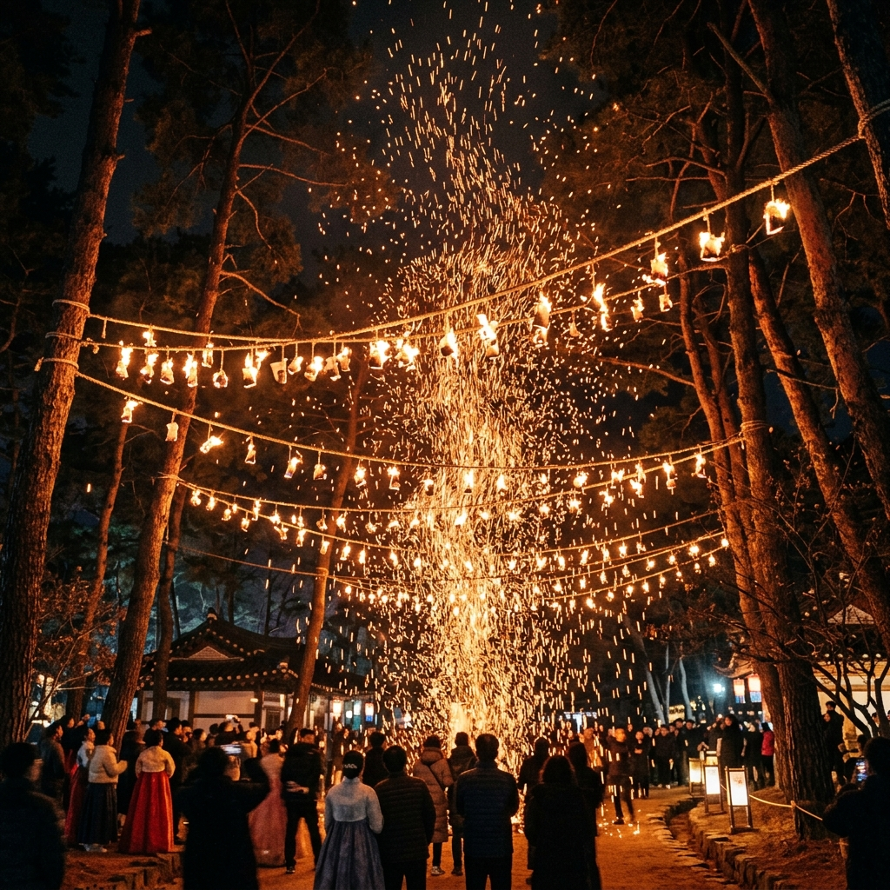
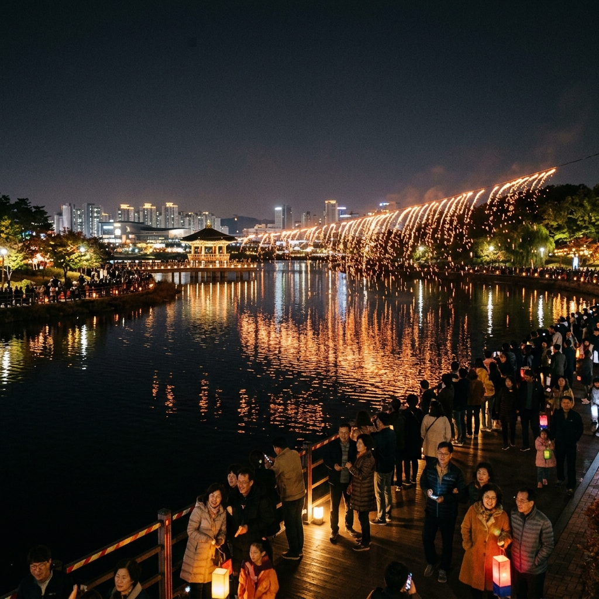
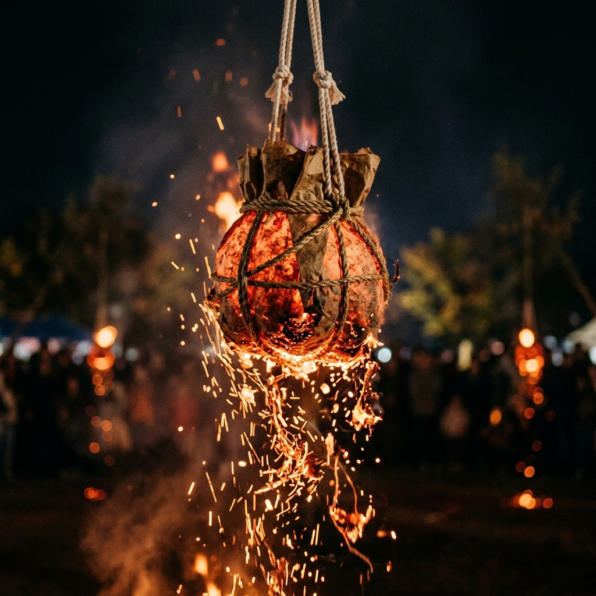

세종 낙화축제 2026 일정 명당 주차 팁 안내: 밤하늘을 수놓는 불꽃 비
어두운 밤하늘 아래, 수만 개의 불꽃 송이가 마치 비처럼 쏟아지는 환상적인 광경을 상상해 보셨나요? 2026년 5월 16일, 세종호수공원과 세종중앙공원 일대에서 펼쳐지는 '세종 낙화축제'는 단순한 불꽃놀이를 넘어 우리 전통의 숨결과 현대적 힐링이 만나는 최고의 야간 축제입니다. 타닥타닥 타들어 가는 소리와 함께 마음의 평온을 찾는 '불멍'의 정수를 경험해 보세요.
01 | 세종 낙화축제란? 전통과 현대의 조화

전통 방식으로 제작된 낙화봉에서 떨어지는 불꽃 비 / AI 제작 이미지
세종 낙화축제는 세종시 무형문화재로 지정된 '세종 불교 낙화법'을 바탕으로 현대적인 감각을 더해 재탄생한 축제입니다. 낙화(落火)는 한지에 숯가루와 소금 등을 넣어 만든 낙화봉에 불을 붙여, 그것이 타들어 가며 떨어지는 불꽃을 감상하는 전통 민속놀이입니다. 일반적인 폭죽형 불꽃놀이와는 달리 은은하고 지속적인 아름다움을 선사하는 것이 특징입니다.
2026년 축제는 더욱 규모를 키워 약 1만여 개의 낙화봉이 설치될 예정입니다. 이는 국내 최대 규모를 자랑하며, 세종시만의 독보적인 야간 관광 브랜드로 자리매김하고 있습니다. 밤하늘을 수놓는 붉은 빛의 향연은 방문객들에게 시각적인 경이로움뿐만 아니라 전통문화에 대한 깊은 자부심을 느끼게 해줍니다.
02 | 2026년 축제 일정 및 장소 정보
올해 축제는 2026년 5월 16일 토요일 저녁 7시 30분부터 약 2시간 동안 진행됩니다. 장소는 세종시의 심장부라 할 수 있는 세종호수공원과 세종중앙공원 일원입니다. 주말 저녁에 펼쳐지는 만큼 가족, 연인과 함께 나들이하기에 더할 나위 없이 좋은 일정입니다.
행사 시작 전인 낮 시간대에는 다양한 사전 프로그램이 운영됩니다. 12시부터 저녁 6시까지 단청 그리기, 소원등 만들기 등 전통 체험이 준비되어 있어 낮부터 밤까지 알찬 시간을 보낼 수 있습니다. 특히 올해는 푸드트럭 운영 대수를 대폭 늘려 관람객들의 편의를 도모했습니다.
03 | 놓치면 안 될 관람 명당 BEST 3

호수 위에 비치는 낙화의 아름다운 반영 / AI 제작 이미지
축제를 제대로 즐기기 위해서는 명당 선점이 필수입니다. 첫 번째 추천 명당은 세종중앙공원 '장남들 광장'입니다. 이곳은 주요 무대와 가깝고 낙화봉이 집중적으로 설치되어 가장 생생한 불꽃의 움직임을 관찰할 수 있습니다.
두 번째는 '야생초화원 소나무 길'입니다. 길게 늘어선 소나무 사이로 떨어지는 불꽃을 보며 산책할 수 있어 더욱 고즈넉하고 낭만적인 분위기를 연출합니다. 마지막으로 '세종호수공원 물놀이 섬'은 호수에 비치는 불꽃의 반영을 함께 감상할 수 있어 사진 작가들이 선호하는 포인트입니다. 어느 곳에 자리를 잡든 점화 후 약 20분이 지났을 때가 가장 아름다운 시점임을 기억하세요.
04 | 세종 낙화축제만의 특별한 '불멍 힐링존'
올해 축제의 핵심 테마 중 하나는 '힐링'입니다. 세종시문화관광재단은 관람객들이 더욱 편안하게 축제를 즐길 수 있도록 곳곳에 '불멍 힐링존'을 조성했습니다. 이곳에서는 캠핑 의자나 빈백 소파에 앉아 떨어지는 불꽃을 바라보며 사색에 잠길 수 있습니다.
바쁜 일상에서 벗어나 타오르는 불꽃 소리와 은은한 나무 향기를 맡으며 뇌에 휴식을 주는 시간은 현대인들에게 큰 위로가 됩니다. 단순한 관람을 넘어 오감으로 느끼는 체험형 축제로 진화한 세종 낙화축제만의 매력입니다. 개인 돗자리를 준비해 가시면 더욱 편안한 관람이 가능합니다.
05 | 전통문화 체험 프로그램과 푸드트럭

정성껏 제작된 전통 낙화봉의 디테일 / AI 제작 이미지
밤의 불꽃 쇼를 기다리는 시간이 전혀 지루하지 않습니다. 세종중앙공원 일대에서는 '불교 낙화법'에 담긴 의미를 배우고 직접 낙화봉을 만들어 보는 체험 부스가 운영됩니다. 아이들에게는 우리 전통문화의 과학적 원리와 미학을 가르쳐 줄 수 있는 좋은 교육의 장이 됩니다.
배고픔을 달래줄 먹거리도 풍성합니다. '네 바퀴 식당'이라는 이름의 푸드트럭 존에서는 스테이크, 츄러스, 닭강정 등 다양한 메뉴가 준비됩니다. 올해는 운영 규모를 30대 이상으로 확대하여 대기 시간을 줄이고 편의를 높였습니다. 취식은 지정된 구역에서만 가능하니 성숙한 관람 문화를 지켜주세요.
06 | 주차 및 교통 대책: 대중교통이 정답!
낙화축제는 매년 수만 명의 인파가 몰리는 인기 축제인 만큼 교통 혼잡이 예상됩니다. 축제 당일 오후 5시부터 밤 11시까지 행사장 주변 도로의 교통이 전면 또는 부분 통제됩니다. 따라서 자가용 이용보다는 대중교통 이용을 적극 권장합니다.
세종시 내외에서 운행하는 셔틀버스와 임시 증편된 시내버스를 활용하는 것이 가장 스트레스 없는 이동 방법입니다. 부득이하게 차를 가져오신다면 정부세종컨벤션센터 인근이나 국립세종수목원 주차장을 이용하고 도보로 이동해야 합니다. 자전거(어울링)나 킥보드를 이용하는 것도 지혜로운 방법입니다.
07 | 안전한 관람을 위한 주의사항
수천 개의 불꽃이 직접 떨어지는 축제 특성상 안전 수칙 준수가 무엇보다 중요합니다. 낙화봉 바로 아래로 들어가는 행위는 엄격히 금지되며, 지정된 안전 라인 밖에서 관람해야 합니다. 불꽃이 바람에 날려 옷에 튈 수 있으므로 가급적 불에 잘 타지 않는 소재의 옷을 입는 것이 좋습니다.
또한, 야간 행사 특성상 발밑이 어두울 수 있으니 이동 시 휴대폰 라이트를 활용해 주세요. 미아 사고 방지를 위해 어린아이와 동반하신 분들은 각별한 주의가 필요합니다. 행사장 곳곳에 배치된 안전 요원들의 지시에 잘 따라주시면 모두가 즐거운 축제를 만들 수 있습니다.
08 | 방문 전 준비하면 좋은 꿀팁 아이템
축제를 200% 즐기기 위한 준비물을 제안해 드립니다. 첫째, 보조 배터리는 필수입니다. 아름다운 광경을 담다 보면 금세 배터리가 소진될 수 있습니다. 둘째, 얇은 겉옷을 챙기세요. 5월 중순이라도 호수 주변의 밤바람은 꽤 쌀쌀할 수 있습니다.
셋째, 물티슈와 쓰레기 봉투를 준비해 주세요. 깨끗한 행사장 관리는 방문객의 손끝에서 시작됩니다. 마지막으로, 여유로운 마음가짐입니다. 낙화는 점화 후 일정 시간이 지나야 가장 풍성한 불꽃을 보여줍니다. 조급해하지 말고 느긋하게 기다리며 밤의 낭만을 즐겨보세요.
09 | 세종시 야간 투어 연계 추천 코스
축제 전후로 함께 방문하기 좋은 세종시 명소들을 소개합니다. '이응다리(금강보행교)'는 독특한 복층 구조의 원형 다리로 세종시의 대표적인 랜드마크입니다. 야간 조명이 아름다워 산책 코스로 추천합니다.
또한, 국립세종수목원의 야간 개장이 진행되는 시기와 맞물린다면 환상적인 온실 야경을 감상할 수 있습니다. 나성동 먹자골목에서 축제의 여운을 즐기며 저녁 식사를 하는 것도 좋습니다. 역사와 미래가 공존하는 세종시에서 특별한 5월의 밤을 완성해 보세요.
#세종낙화축제
#2026세종축제
#낙화축제명당
#세종호수공원
#불멍축제
#전통불꽃놀이
#5월축제추천
#세종가볼만한곳
#야간데이트코스
#세종시문화관광